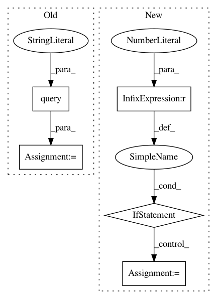

df1dd9b108f3cd7d5130e7f654ea099021c7a2b3,qanta/guesser/experimental/elasticsearch_instance_of.py,ElasticSearchIndex,search,#ElasticSearchIndex#Any#Any#Any#Any#,82
Before Change
apply_filter = False
if apply_filter:
s = Search(index=INDEX_NAME)\
.filter("term", instance_of=predicted_instance_of)\
.query(
"multi_match",
query=text,
fields=["wiki_content", "qb_content"]
)
else:
s = Search(index=INDEX_NAME) \
.query(
"multi_match",
After Change
x_data = []
y_data = []
classes = set(instance_of_map.values())
class_to_i = {label: i for i, label in enumerate(classes, 1)}
i_to_class = {i: label for label, i in class_to_i.items()}
for q, p in zip(questions, pages):
for sent in q:
x_data.append(sent)
if p in instance_of_map:
In pattern: SUPERPATTERN
Frequency: 3
Non-data size: 5
Instances
Project Name: Pinafore/qb
Commit Name: df1dd9b108f3cd7d5130e7f654ea099021c7a2b3
Time: 2017-05-24
Author: ski.rodriguez@gmail.com
File Name: qanta/guesser/experimental/elasticsearch_instance_of.py
Class Name: ElasticSearchIndex
Method Name: search
Project Name: automl/auto-sklearn
Commit Name: 5f6de3a6593f516653fc5e7ac9eba58c038de101
Time: 2019-02-07
Author: ahn1340@hotmail.com
File Name: scripts/2015_nips_paper/get_tasks.py
Class Name:
Method Name: get_task_ids
Project Name: automl/auto-sklearn
Commit Name: 67431581de4f80e2e7cb57969368c7f5d65a7d34
Time: 2019-03-13
Author: ahn1340@hotmail.com
File Name: scripts/2015_nips_paper/get_tasks.py
Class Name:
Method Name: get_task_ids